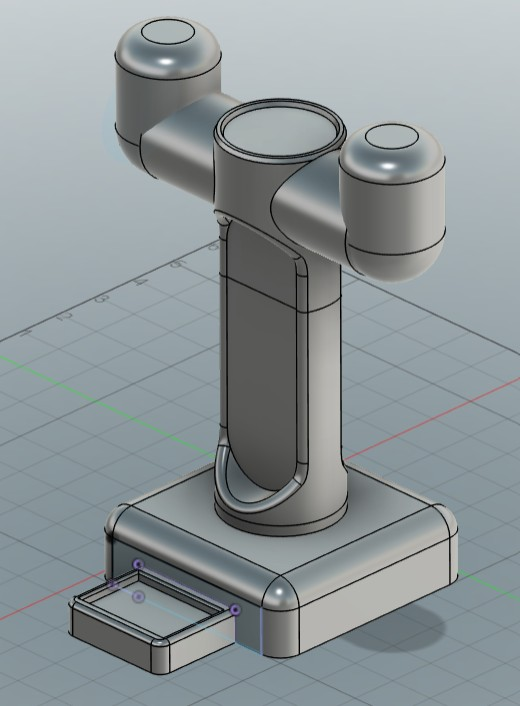
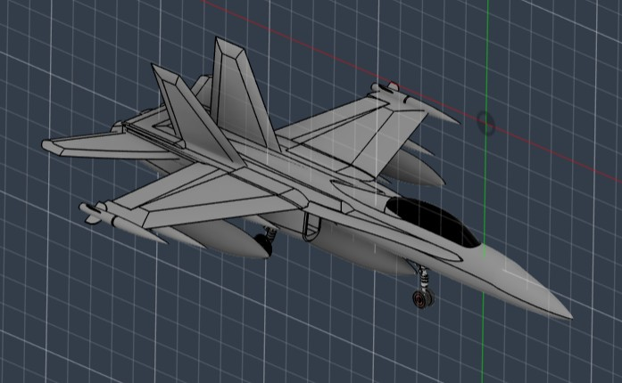
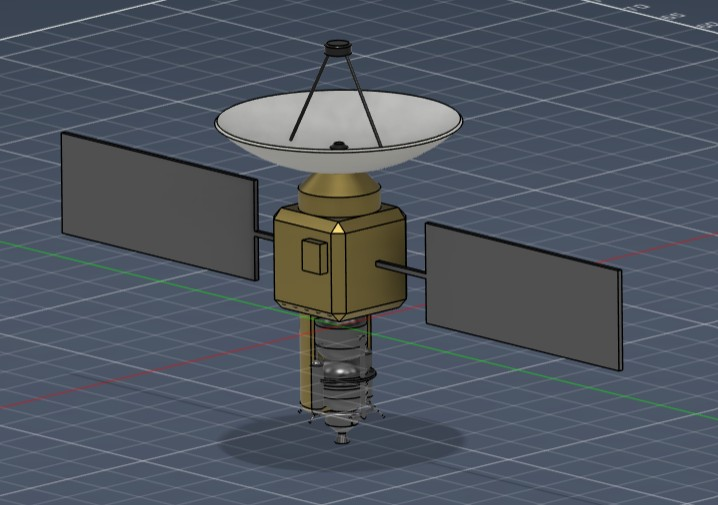
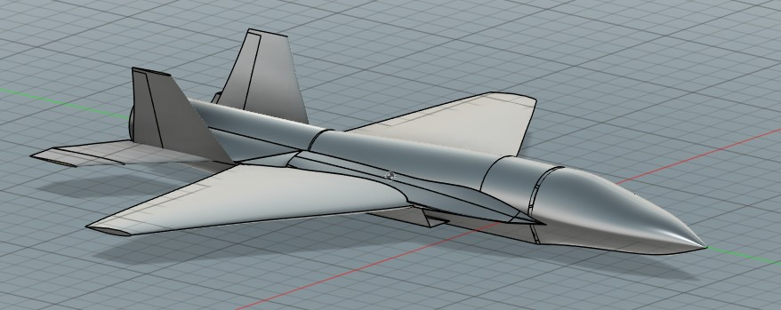

Building at the intersection of aerospace, software, and machine learning — from orbital simulations and spacecraft CAD to robotic control systems and cloud infrastructure.
Built with a founder mindset at IBM — product managed the full lifecycle from market analysis of intern pain points through production deployment. A time reporting and billability tracking platform adopted by interns and managers across IBM.
A real-time stock dashboard built in Next.js/TypeScript featuring live TradingView charts, market heatmaps, sector-grouped quotes, and financial news — iterated on based on user feedback and customer empathy.
Engineered a hybrid STL + Isolation Forest model for time-series pipeline metrics at IBM, using statistical seasonal-trend decomposition to isolate residuals before ML-based scoring to cleanly distinguish true anomalies from normal seasonality.
A dual-policy robotic control framework combining imitation learning (behavior cloning) with deep reinforcement learning to handle out-of-distribution states in manipulation tasks. Built as part of the Robot Learning FRI research program at UT Austin.
Developed orbital energy simulations for spacecraft power system validation as part of the Texas Spacecraft Laboratory's Electrical Power Systems sub-team. Designed EGSE PCBs and validated power models against real load profiles and bench data.
Design a compact, ergonomic headphone stand with an integrated AirPods Pro holder optimized for desktop use and 3D printing.

Redesign and refine a high-fidelity CAD model of the F-18 to improve geometric accuracy, surface continuity, and subsystem realism while maintaining structurally plausible aircraft features.

Design a CubeSat platform integrating a compact liquid propulsion system for controlled orbital maneuvering and attitude adjustments within CubeSat mass, volume, and power constraints.

Design a next-generation autonomous fighter jet for the Navy that breaks Augustine's Law while achieving Mach 1.8 speeds and incorporating stealth capabilities. Submitted for the AIAA Aircraft Design Competition.

Full design report submitted for the AIAA Aircraft Design Competition — University of Texas at Austin, 2026.
View Full ReportAerospace Engineering student with experience in ML, embedded systems, cloud infrastructure, and spacecraft design.
Download ResumeOpen to internships, research collaborations, and interesting engineering problems. Reach out any time.
akshaymall@utexas.edu